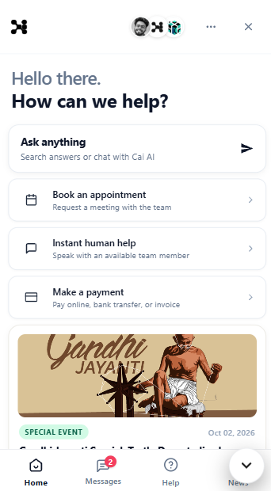
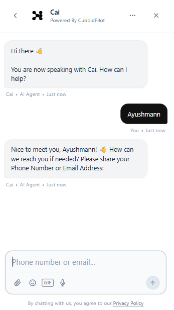
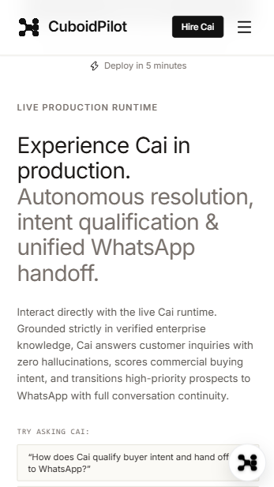
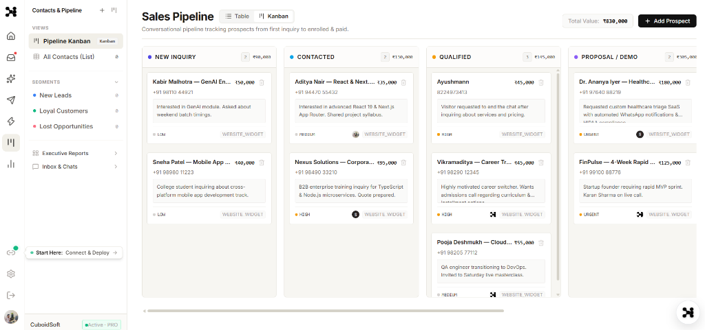
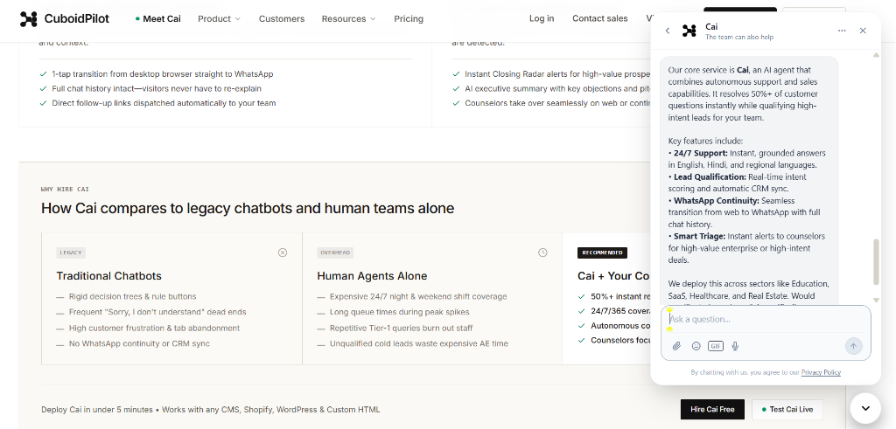
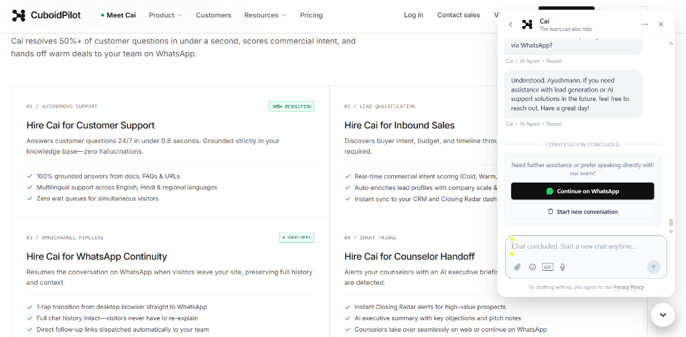
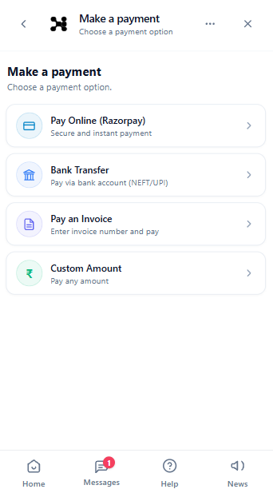
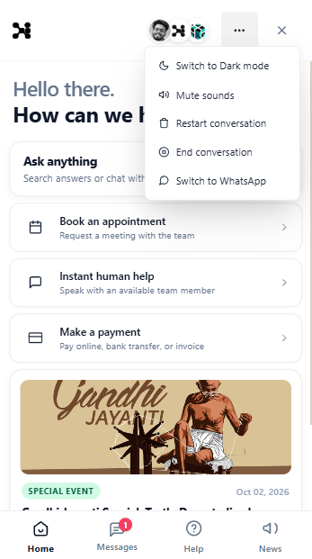

Most customer service platforms are a legacy ticketing inbox with a generic AI chatbot bolted on. Cai was built natively as an autonomous conversation runtime: resolving queries, qualifying buyers, continuing to WhatsApp, and collecting payments.


CuboidPilot is the only helpdesk engineered with a natively integrated AI conversation agent.
Cai is the highest-performing conversational AI agent in the ecosystem, with an average autonomous resolution rate of 76%, and many high-growth teams seeing 85% or higher. It is grounded strictly in your enterprise documentation, eliminating hallucinations.

"In the first month of deploying Cai, we'd already saved over 1,200 hours of our customer support team's time."
CuboidPilot has everything your human team needs to resolve queries faster and keep improving: a natively integrated AI agent, shared team inbox, AI-powered ticketing, and Copilot for reps.
Give every human agent an AI assistant that pulls context from past conversations, surfaces instant answers from your knowledge base, and drafts replies. In testing, agents closed 31% more conversations daily.
Convert any conversation into a prioritized ticket with one click, automatically categorized, scored for buying intent, and routed to the right team with full background.
Build powerful automations to route conversations, manage SLAs, and configure escalation triggers without engineering support.


Cai and CuboidPilot are built together and run in one system, so you get 100% coverage of every conversation across AI and your team, with zero context silos.
Cai improves by learning from your best reps, and its suggestions make your human team better. The more conversations you resolve, the smarter your customer service gets.

Bring every conversation across web chat, WhatsApp, email, and social messaging into one unified inbox, so your team works from one place.
Because Cai and your human team share the exact same customer record, every handoff carries full context. No customer has to switch tools, repeat their problem, or start from scratch.
Customers can select "Make a payment", choose Razorpay, UPI, or invoice payment, and complete the transaction without leaving the chat.
Seamlessly transfer prospects from web widget to official WhatsApp, carrying over the full question history and qualified lead score.


CuboidPilot helps you get ahead of issues before they become support volume, with tools to onboard, educate, and notify customers proactively.
From celebrating special events (like Gandhi Jayanti) right on the widget home feed, to booking calendar meetings with your team, Cai turns passive visitors into active brand advocates.
Broadcast announcements, holiday greetings, and release updates directly into the widget home feed from your SuperAdmin portal.
Allow prospects to request meetings and book appointments directly with your team without friction.

CuboidPilot keeps pricing simple: straightforward plans for the human helpdesk, plus outcome-based pricing for Cai, so you only pay for AI when it delivers verified value.
| Capability |
|
Legacy Helpdesks |
|---|---|---|
| AI Architecture | Natively integrated conversation runtime | Third-party chatbots bolted onto legacy ticketing queues |
| WhatsApp Continuity | 1-Click handoff with full transcript preserved | Requires separate expensive BSP connectors and add-ons |
| In-Widget Payments | Native Razorpay, UPI, NEFT & invoices in chat | Redirects customers out of chat to external portals |
| Hallucination Prevention | Strict verified business context grounding | High risk of hallucinated policies and pricing |
| Lead Qualification | Automated commercial intent scoring & CRM sync | Manual tagging or costly enterprise add-on modules |
| Setup & Deployment | 5 minutes (single copy-paste script tag) | Weeks of consultant configuration and IT onboarding |
Everything you need to know about choosing Cai and migrating from legacy helpdesks.
Deploy in 5 minutes. Resolve 75%+ of customer inquiries with verified AI reasoning, and seamlessly route high-value buyers to WhatsApp.